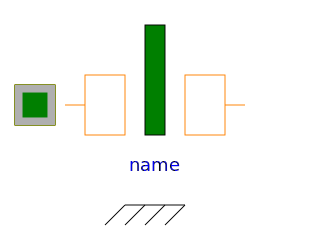

This package contains connectors for the magnetic domain and partial models for lumped magnetic network components.
| Name | Description |
|---|---|
| Generic magnetic port | |
| Positive magnetic port | |
| Negative magnetic port | |
|
|
Partial component with two magnetic ports p and n for textual programming |
| Partial component with magnetic potential difference between two magnetic ports p and n and magnetic flux Phi from p to n | |
| Base class for flux tubes with fixed shape during simulation; linear or non-linear material characteristics | |
|  PartialForce | Base class for flux tubes with reluctance force generation; constant permeability |
| Base class for leakage flux tubes with position-independent permeance and hence no force generation; mu_r=1 |